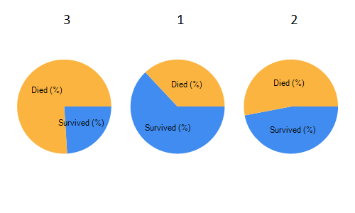

Analysing Titanic data
1: 2: 3: 4: |
open Deedle open FSharp.Charting let titanic = Frame.ReadCsv("C:/data/Titanic.csv") |
1: 2: 3: |
titanic |> Frame.filterRows (fun _ row -> row.GetAs "Survived") |> Frame.countRows |
342
1: 2: 3: |
titanic |> Frame.filterRows (fun _ row -> not (row.GetAs "Survived")) |> Frame.countRows |
549
More stuff:
1: 2: 3: 4: 5: 6: 7: |
let byClass = titanic |> Frame.groupRowsByInt "Pclass" let ages = byClass?Age |> Stats.levelMean fst |
Keys |
3 |
1 |
2 |
|---|---|---|---|
Values |
25.1406197183099 |
38.2334408602151 |
29.8776300578035 |
1: 2: 3: 4: 5: 6: 7: 8: 9: 10: 11: 12: 13: 14: 15: |
// Look at survived column as booleans let survivedByClass = byClass.GetColumn<bool>("Survived") // Count number of survived/died in each group let survivals = survivedByClass |> Series.applyLevel fst (fun sr -> sr.Values |> Seq.countBy id |> series) |> Frame.ofRows |> Frame.indexColsWith ["Died"; "Survived"] // Count total number of passangers in each group survivals?Total <- byClass?PassengerId |> Series.applyLevel fst Series.countKeys survivals |
Died |
Survived |
Total |
|
|---|---|---|---|
3 |
372 |
119 |
491 |
1 |
80 |
136 |
216 |
2 |
97 |
87 |
184 |
1: 2: 3: 4: |
let summary = [ "Survived (%)" => survivals?Survived / survivals?Total * 100.0 "Died (%)" => survivals?Died/ survivals?Total * 100.0 ] |> frame |> round |
Survived (%) |
Died (%) |
|
|---|---|---|
3 |
24 |
76 |
1 |
63 |
37 |
2 |
47 |
53 |
1: 2: 3: |
Chart.Columns [ for k in summary.RowKeys -> Chart.Pie(summary.Rows.[k].As<float>()).WithTitle(string k) ] |

namespace Deedle
namespace FSharp
namespace FSharp.Charting
val titanic : Frame<int,string>
Full name: Tutorial.titanic
Full name: Tutorial.titanic
Multiple items
module Frame
from Deedle
--------------------
type Frame =
static member CreateEmpty : unit -> Frame<'R,'C> (requires equality and equality)
static member FromArray2D : array:'T [,] -> Frame<int,int>
static member FromColumns : cols:Series<'TColKey,Series<'TRowKey,'V>> -> Frame<'TRowKey,'TColKey> (requires equality and equality)
static member FromColumns : cols:Series<'TColKey,ObjectSeries<'TRowKey>> -> Frame<'TRowKey,'TColKey> (requires equality and equality)
static member FromColumns : columns:seq<KeyValuePair<'ColKey,ObjectSeries<'RowKey>>> -> Frame<'RowKey,'ColKey> (requires equality and equality)
static member FromColumns : columns:seq<KeyValuePair<'ColKey,Series<'RowKey,'V>>> -> Frame<'RowKey,'ColKey> (requires equality and equality)
static member FromColumns : rows:seq<Series<'ColKey,'V>> -> Frame<'ColKey,int> (requires equality)
static member FromRecords : values:seq<'T> -> Frame<int,string>
static member FromRecords : series:Series<'K,'R> -> Frame<'K,string> (requires equality)
static member FromRowKeys : keys:seq<'K> -> Frame<'K,string> (requires equality)
...
Full name: Deedle.Frame
--------------------
type Frame<'TRowKey,'TColumnKey (requires equality and equality)> =
interface IDynamicMetaObjectProvider
interface INotifyCollectionChanged
interface IFsiFormattable
interface IFrame
new : names:seq<'TColumnKey> * columns:seq<ISeries<'TRowKey>> -> Frame<'TRowKey,'TColumnKey>
private new : rowIndex:IIndex<'TRowKey> * columnIndex:IIndex<'TColumnKey> * data:IVector<IVector> -> Frame<'TRowKey,'TColumnKey>
member AddColumn : column:'TColumnKey * series:ISeries<'TRowKey> -> unit
member AddColumn : column:'TColumnKey * series:seq<'V> -> unit
member AddColumn : column:'TColumnKey * series:ISeries<'TRowKey> * lookup:Lookup -> unit
member AddColumn : column:'TColumnKey * series:seq<'V> * lookup:Lookup -> unit
...
Full name: Deedle.Frame<_,_>
--------------------
new : names:seq<'TColumnKey> * columns:seq<ISeries<'TRowKey>> -> Frame<'TRowKey,'TColumnKey>
module Frame
from Deedle
--------------------
type Frame =
static member CreateEmpty : unit -> Frame<'R,'C> (requires equality and equality)
static member FromArray2D : array:'T [,] -> Frame<int,int>
static member FromColumns : cols:Series<'TColKey,Series<'TRowKey,'V>> -> Frame<'TRowKey,'TColKey> (requires equality and equality)
static member FromColumns : cols:Series<'TColKey,ObjectSeries<'TRowKey>> -> Frame<'TRowKey,'TColKey> (requires equality and equality)
static member FromColumns : columns:seq<KeyValuePair<'ColKey,ObjectSeries<'RowKey>>> -> Frame<'RowKey,'ColKey> (requires equality and equality)
static member FromColumns : columns:seq<KeyValuePair<'ColKey,Series<'RowKey,'V>>> -> Frame<'RowKey,'ColKey> (requires equality and equality)
static member FromColumns : rows:seq<Series<'ColKey,'V>> -> Frame<'ColKey,int> (requires equality)
static member FromRecords : values:seq<'T> -> Frame<int,string>
static member FromRecords : series:Series<'K,'R> -> Frame<'K,string> (requires equality)
static member FromRowKeys : keys:seq<'K> -> Frame<'K,string> (requires equality)
...
Full name: Deedle.Frame
--------------------
type Frame<'TRowKey,'TColumnKey (requires equality and equality)> =
interface IDynamicMetaObjectProvider
interface INotifyCollectionChanged
interface IFsiFormattable
interface IFrame
new : names:seq<'TColumnKey> * columns:seq<ISeries<'TRowKey>> -> Frame<'TRowKey,'TColumnKey>
private new : rowIndex:IIndex<'TRowKey> * columnIndex:IIndex<'TColumnKey> * data:IVector<IVector> -> Frame<'TRowKey,'TColumnKey>
member AddColumn : column:'TColumnKey * series:ISeries<'TRowKey> -> unit
member AddColumn : column:'TColumnKey * series:seq<'V> -> unit
member AddColumn : column:'TColumnKey * series:ISeries<'TRowKey> * lookup:Lookup -> unit
member AddColumn : column:'TColumnKey * series:seq<'V> * lookup:Lookup -> unit
...
Full name: Deedle.Frame<_,_>
--------------------
new : names:seq<'TColumnKey> * columns:seq<ISeries<'TRowKey>> -> Frame<'TRowKey,'TColumnKey>
static member Frame.ReadCsv : path:string * ?hasHeaders:bool * ?inferTypes:bool * ?inferRows:int * ?schema:string * ?separators:string * ?culture:string * ?maxRows:int -> Frame<int,string>
static member Frame.ReadCsv : stream:System.IO.Stream * ?hasHeaders:bool * ?inferTypes:bool * ?inferRows:int * ?schema:string * ?separators:string * ?culture:string * ?maxRows:int -> Frame<int,string>
static member Frame.ReadCsv : stream:System.IO.Stream * ?hasHeaders:bool * ?inferTypes:bool * ?inferRows:int * ?schema:string * ?separators:string * ?culture:string * ?maxRows:int -> Frame<int,string>
val filterRows : f:('R -> ObjectSeries<'C> -> bool) -> frame:Frame<'R,'C> -> Frame<'R,'C> (requires equality and equality)
Full name: Deedle.Frame.filterRows
Full name: Deedle.Frame.filterRows
val row : ObjectSeries<string>
member ObjectSeries.GetAs : column:'K -> 'R
member ObjectSeries.GetAs : column:'K * fallback:'R -> 'R
member ObjectSeries.GetAs : column:'K * fallback:'R -> 'R
val countRows : frame:Frame<'R,'C> -> int (requires equality and equality)
Full name: Deedle.Frame.countRows
Full name: Deedle.Frame.countRows
val not : value:bool -> bool
Full name: Microsoft.FSharp.Core.Operators.not
Full name: Microsoft.FSharp.Core.Operators.not
val byClass : Frame<(int * int),string>
Full name: Tutorial.byClass
Full name: Tutorial.byClass
val groupRowsByInt : column:'C -> frame:Frame<'R,'C> -> Frame<(int * 'R),'C> (requires equality and equality)
Full name: Deedle.Frame.groupRowsByInt
Full name: Deedle.Frame.groupRowsByInt
val ages : Series<int,float>
Full name: Tutorial.ages
Full name: Tutorial.ages
type Stats =
static member count : frame:Frame<'R,'C> -> Series<'C,int> (requires equality and equality)
static member count : series:Series<'K,'V> -> int (requires equality)
static member expandingCount : series:Series<'K,float> -> Series<'K,float> (requires equality)
static member expandingKurt : series:Series<'K,float> -> Series<'K,float> (requires equality)
static member expandingMax : series:Series<'K,float> -> Series<'K,float> (requires equality)
static member expandingMean : series:Series<'K,float> -> Series<'K,float> (requires equality)
static member expandingMin : series:Series<'K,float> -> Series<'K,float> (requires equality)
static member expandingSkew : series:Series<'K,float> -> Series<'K,float> (requires equality)
static member expandingStdDev : series:Series<'K,float> -> Series<'K,float> (requires equality)
static member expandingSum : series:Series<'K,float> -> Series<'K,float> (requires equality)
...
Full name: Deedle.Stats
static member count : frame:Frame<'R,'C> -> Series<'C,int> (requires equality and equality)
static member count : series:Series<'K,'V> -> int (requires equality)
static member expandingCount : series:Series<'K,float> -> Series<'K,float> (requires equality)
static member expandingKurt : series:Series<'K,float> -> Series<'K,float> (requires equality)
static member expandingMax : series:Series<'K,float> -> Series<'K,float> (requires equality)
static member expandingMean : series:Series<'K,float> -> Series<'K,float> (requires equality)
static member expandingMin : series:Series<'K,float> -> Series<'K,float> (requires equality)
static member expandingSkew : series:Series<'K,float> -> Series<'K,float> (requires equality)
static member expandingStdDev : series:Series<'K,float> -> Series<'K,float> (requires equality)
static member expandingSum : series:Series<'K,float> -> Series<'K,float> (requires equality)
...
Full name: Deedle.Stats
static member Stats.levelMean : level:('K -> 'L) -> series:Series<'K,float> -> Series<'L,float> (requires equality and equality)
val fst : tuple:('T1 * 'T2) -> 'T1
Full name: Microsoft.FSharp.Core.Operators.fst
Full name: Microsoft.FSharp.Core.Operators.fst
val survivedByClass : Series<(int * int),bool>
Full name: Tutorial.survivedByClass
Full name: Tutorial.survivedByClass
member Frame.GetColumn : column:'TColumnKey -> Series<'TRowKey,'R>
member Frame.GetColumn : column:'TColumnKey * lookup:Lookup -> Series<'TRowKey,'R>
member Frame.GetColumn : column:'TColumnKey * lookup:Lookup -> Series<'TRowKey,'R>
type bool = System.Boolean
Full name: Microsoft.FSharp.Core.bool
Full name: Microsoft.FSharp.Core.bool
val survivals : Frame<int,string>
Full name: Tutorial.survivals
Full name: Tutorial.survivals
Multiple items
module Series
from Deedle
--------------------
type Series =
static member ofNullables : values:seq<Nullable<'a0>> -> Series<int,'a0> (requires default constructor and value type and 'a0 :> ValueType)
static member ofObservations : observations:seq<'a0 * 'a1> -> Series<'a0,'a1> (requires equality)
static member ofOptionalObservations : observations:seq<'K * 'a1 option> -> Series<'K,'a1> (requires equality)
static member ofValues : values:seq<'a0> -> Series<int,'a0>
Full name: Deedle.FSharpSeriesExtensions.Series
--------------------
type Series<'K,'V (requires equality)> =
interface IFsiFormattable
interface ISeries<'K>
new : pairs:seq<KeyValuePair<'K,'V>> -> Series<'K,'V>
new : keys:seq<'K> * values:seq<'V> -> Series<'K,'V>
new : index:IIndex<'K> * vector:IVector<'V> * vectorBuilder:IVectorBuilder * indexBuilder:IIndexBuilder -> Series<'K,'V>
member After : lowerExclusive:'K -> Series<'K,'V>
member Aggregate : aggregation:Aggregation<'K> * observationSelector:Func<DataSegment<Series<'K,'V>>,KeyValuePair<'TNewKey,OptionalValue<'R>>> -> Series<'TNewKey,'R> (requires equality)
member Aggregate : aggregation:Aggregation<'K> * keySelector:Func<DataSegment<Series<'K,'V>>,'TNewKey> * valueSelector:Func<DataSegment<Series<'K,'V>>,OptionalValue<'R>> -> Series<'TNewKey,'R> (requires equality)
member AsyncMaterialize : unit -> Async<Series<'K,'V>>
member Before : upperExclusive:'K -> Series<'K,'V>
...
Full name: Deedle.Series<_,_>
--------------------
new : pairs:seq<System.Collections.Generic.KeyValuePair<'K,'V>> -> Series<'K,'V>
new : keys:seq<'K> * values:seq<'V> -> Series<'K,'V>
new : index:Indices.IIndex<'K> * vector:IVector<'V> * vectorBuilder:Vectors.IVectorBuilder * indexBuilder:Indices.IIndexBuilder -> Series<'K,'V>
module Series
from Deedle
--------------------
type Series =
static member ofNullables : values:seq<Nullable<'a0>> -> Series<int,'a0> (requires default constructor and value type and 'a0 :> ValueType)
static member ofObservations : observations:seq<'a0 * 'a1> -> Series<'a0,'a1> (requires equality)
static member ofOptionalObservations : observations:seq<'K * 'a1 option> -> Series<'K,'a1> (requires equality)
static member ofValues : values:seq<'a0> -> Series<int,'a0>
Full name: Deedle.FSharpSeriesExtensions.Series
--------------------
type Series<'K,'V (requires equality)> =
interface IFsiFormattable
interface ISeries<'K>
new : pairs:seq<KeyValuePair<'K,'V>> -> Series<'K,'V>
new : keys:seq<'K> * values:seq<'V> -> Series<'K,'V>
new : index:IIndex<'K> * vector:IVector<'V> * vectorBuilder:IVectorBuilder * indexBuilder:IIndexBuilder -> Series<'K,'V>
member After : lowerExclusive:'K -> Series<'K,'V>
member Aggregate : aggregation:Aggregation<'K> * observationSelector:Func<DataSegment<Series<'K,'V>>,KeyValuePair<'TNewKey,OptionalValue<'R>>> -> Series<'TNewKey,'R> (requires equality)
member Aggregate : aggregation:Aggregation<'K> * keySelector:Func<DataSegment<Series<'K,'V>>,'TNewKey> * valueSelector:Func<DataSegment<Series<'K,'V>>,OptionalValue<'R>> -> Series<'TNewKey,'R> (requires equality)
member AsyncMaterialize : unit -> Async<Series<'K,'V>>
member Before : upperExclusive:'K -> Series<'K,'V>
...
Full name: Deedle.Series<_,_>
--------------------
new : pairs:seq<System.Collections.Generic.KeyValuePair<'K,'V>> -> Series<'K,'V>
new : keys:seq<'K> * values:seq<'V> -> Series<'K,'V>
new : index:Indices.IIndex<'K> * vector:IVector<'V> * vectorBuilder:Vectors.IVectorBuilder * indexBuilder:Indices.IIndexBuilder -> Series<'K,'V>
val applyLevel : level:('K1 -> 'K2) -> op:(Series<'K1,'V> -> 'R) -> series:Series<'K1,'V> -> Series<'K2,'R> (requires equality and equality)
Full name: Deedle.Series.applyLevel
Full name: Deedle.Series.applyLevel
val sr : Series<(int * int),bool>
property Series.Values: seq<bool>
module Seq
from Microsoft.FSharp.Collections
from Microsoft.FSharp.Collections
val countBy : projection:('T -> 'Key) -> source:seq<'T> -> seq<'Key * int> (requires equality)
Full name: Microsoft.FSharp.Collections.Seq.countBy
Full name: Microsoft.FSharp.Collections.Seq.countBy
val id : x:'T -> 'T
Full name: Microsoft.FSharp.Core.Operators.id
Full name: Microsoft.FSharp.Core.Operators.id
val series : observations:seq<'a * 'b> -> Series<'a,'b> (requires equality)
Full name: Deedle.FSharpSeriesExtensions.series
Full name: Deedle.FSharpSeriesExtensions.series
static member Frame.ofRows : rows:seq<'a0 * #ISeries<'a2>> -> Frame<'a0,'a2> (requires equality and equality)
static member Frame.ofRows : rows:Series<'a0,#ISeries<'a2>> -> Frame<'a0,'a2> (requires equality and equality)
static member Frame.ofRows : rows:Series<'a0,#ISeries<'a2>> -> Frame<'a0,'a2> (requires equality and equality)
val indexColsWith : keys:seq<'C2> -> frame:Frame<'R,'C1> -> Frame<'R,'C2> (requires equality and equality and equality)
Full name: Deedle.Frame.indexColsWith
Full name: Deedle.Frame.indexColsWith
val countKeys : series:Series<'K,'T> -> int (requires equality)
Full name: Deedle.Series.countKeys
Full name: Deedle.Series.countKeys
val summary : Frame<int,string>
Full name: Tutorial.summary
Full name: Tutorial.summary
val frame : columns:seq<'a * #ISeries<'c>> -> Frame<'c,'a> (requires equality and equality)
Full name: Deedle.FSharpFrameExtensions.frame
Full name: Deedle.FSharpFrameExtensions.frame
val round : value:'T -> 'T (requires member Round)
Full name: Microsoft.FSharp.Core.Operators.round
Full name: Microsoft.FSharp.Core.Operators.round
type Chart =
static member Area : data:seq<#value> * ?Name:string * ?Title:string * ?Labels:#seq<string> * ?Color:Color * ?XTitle:string * ?YTitle:string -> GenericChart
static member Area : data:seq<#key * #value> * ?Name:string * ?Title:string * ?Labels:#seq<string> * ?Color:Color * ?XTitle:string * ?YTitle:string -> GenericChart
static member Bar : data:seq<#value> * ?Name:string * ?Title:string * ?Labels:#seq<string> * ?Color:Color * ?XTitle:string * ?YTitle:string -> GenericChart
static member Bar : data:seq<#key * #value> * ?Name:string * ?Title:string * ?Labels:#seq<string> * ?Color:Color * ?XTitle:string * ?YTitle:string -> GenericChart
static member BoxPlotFromData : data:seq<#key * #seq<'a2>> * ?Name:string * ?Title:string * ?Color:Color * ?XTitle:string * ?YTitle:string * ?Percentile:int * ?ShowAverage:bool * ?ShowMedian:bool * ?ShowUnusualValues:bool * ?WhiskerPercentile:int -> GenericChart (requires 'a2 :> value)
static member BoxPlotFromStatistics : data:seq<#key * #value * #value * #value * #value * #value * #value> * ?Name:string * ?Title:string * ?Labels:#seq<string> * ?Color:Color * ?XTitle:string * ?YTitle:string * ?Percentile:int * ?ShowAverage:bool * ?ShowMedian:bool * ?ShowUnusualValues:bool * ?WhiskerPercentile:int -> GenericChart
static member Bubble : data:seq<#value * #value> * ?Name:string * ?Title:string * ?Labels:#seq<string> * ?Color:Color * ?XTitle:string * ?YTitle:string * ?BubbleMaxSize:int * ?BubbleMinSize:int * ?BubbleScaleMax:float * ?BubbleScaleMin:float * ?UseSizeForLabel:bool -> GenericChart
static member Bubble : data:seq<#key * #value * #value> * ?Name:string * ?Title:string * ?Labels:#seq<string> * ?Color:Color * ?XTitle:string * ?YTitle:string * ?BubbleMaxSize:int * ?BubbleMinSize:int * ?BubbleScaleMax:float * ?BubbleScaleMin:float * ?UseSizeForLabel:bool -> GenericChart
static member Candlestick : data:seq<#value * #value * #value * #value> * ?Name:string * ?Title:string * ?Labels:#seq<string> * ?Color:Color * ?XTitle:string * ?YTitle:string -> CandlestickChart
static member Candlestick : data:seq<#key * #value * #value * #value * #value> * ?Name:string * ?Title:string * ?Labels:#seq<string> * ?Color:Color * ?XTitle:string * ?YTitle:string -> CandlestickChart
...
Full name: FSharp.Charting.Chart
static member Area : data:seq<#value> * ?Name:string * ?Title:string * ?Labels:#seq<string> * ?Color:Color * ?XTitle:string * ?YTitle:string -> GenericChart
static member Area : data:seq<#key * #value> * ?Name:string * ?Title:string * ?Labels:#seq<string> * ?Color:Color * ?XTitle:string * ?YTitle:string -> GenericChart
static member Bar : data:seq<#value> * ?Name:string * ?Title:string * ?Labels:#seq<string> * ?Color:Color * ?XTitle:string * ?YTitle:string -> GenericChart
static member Bar : data:seq<#key * #value> * ?Name:string * ?Title:string * ?Labels:#seq<string> * ?Color:Color * ?XTitle:string * ?YTitle:string -> GenericChart
static member BoxPlotFromData : data:seq<#key * #seq<'a2>> * ?Name:string * ?Title:string * ?Color:Color * ?XTitle:string * ?YTitle:string * ?Percentile:int * ?ShowAverage:bool * ?ShowMedian:bool * ?ShowUnusualValues:bool * ?WhiskerPercentile:int -> GenericChart (requires 'a2 :> value)
static member BoxPlotFromStatistics : data:seq<#key * #value * #value * #value * #value * #value * #value> * ?Name:string * ?Title:string * ?Labels:#seq<string> * ?Color:Color * ?XTitle:string * ?YTitle:string * ?Percentile:int * ?ShowAverage:bool * ?ShowMedian:bool * ?ShowUnusualValues:bool * ?WhiskerPercentile:int -> GenericChart
static member Bubble : data:seq<#value * #value> * ?Name:string * ?Title:string * ?Labels:#seq<string> * ?Color:Color * ?XTitle:string * ?YTitle:string * ?BubbleMaxSize:int * ?BubbleMinSize:int * ?BubbleScaleMax:float * ?BubbleScaleMin:float * ?UseSizeForLabel:bool -> GenericChart
static member Bubble : data:seq<#key * #value * #value> * ?Name:string * ?Title:string * ?Labels:#seq<string> * ?Color:Color * ?XTitle:string * ?YTitle:string * ?BubbleMaxSize:int * ?BubbleMinSize:int * ?BubbleScaleMax:float * ?BubbleScaleMin:float * ?UseSizeForLabel:bool -> GenericChart
static member Candlestick : data:seq<#value * #value * #value * #value> * ?Name:string * ?Title:string * ?Labels:#seq<string> * ?Color:Color * ?XTitle:string * ?YTitle:string -> CandlestickChart
static member Candlestick : data:seq<#key * #value * #value * #value * #value> * ?Name:string * ?Title:string * ?Labels:#seq<string> * ?Color:Color * ?XTitle:string * ?YTitle:string -> CandlestickChart
...
Full name: FSharp.Charting.Chart
static member Chart.Columns : charts:seq<ChartTypes.GenericChart> -> ChartTypes.GenericChart
val k : int
property Frame.RowKeys: seq<int>
static member Chart.Pie : data:Series<'K,#value> * ?Name:string * ?Title:string * ?Labels:#seq<string> * ?Color:System.Drawing.Color * ?XTitle:string * ?YTitle:string -> ChartTypes.PieChart (requires equality and 'K :> key)
static member Chart.Pie : data:seq<#value> * ?Name:string * ?Title:string * ?Labels:#seq<string> * ?Color:System.Drawing.Color * ?XTitle:string * ?YTitle:string -> ChartTypes.PieChart
static member Chart.Pie : data:seq<#key * #value> * ?Name:string * ?Title:string * ?Labels:#seq<string> * ?Color:System.Drawing.Color * ?XTitle:string * ?YTitle:string -> ChartTypes.PieChart
static member Chart.Pie : data:seq<#value> * ?Name:string * ?Title:string * ?Labels:#seq<string> * ?Color:System.Drawing.Color * ?XTitle:string * ?YTitle:string -> ChartTypes.PieChart
static member Chart.Pie : data:seq<#key * #value> * ?Name:string * ?Title:string * ?Labels:#seq<string> * ?Color:System.Drawing.Color * ?XTitle:string * ?YTitle:string -> ChartTypes.PieChart
property Frame.Rows: RowSeries<int,string>
Multiple items
val float : value:'T -> float (requires member op_Explicit)
Full name: Microsoft.FSharp.Core.Operators.float
--------------------
type float = System.Double
Full name: Microsoft.FSharp.Core.float
--------------------
type float<'Measure> = float
Full name: Microsoft.FSharp.Core.float<_>
val float : value:'T -> float (requires member op_Explicit)
Full name: Microsoft.FSharp.Core.Operators.float
--------------------
type float = System.Double
Full name: Microsoft.FSharp.Core.float
--------------------
type float<'Measure> = float
Full name: Microsoft.FSharp.Core.float<_>
Multiple items
val string : value:'T -> string
Full name: Microsoft.FSharp.Core.Operators.string
--------------------
type string = System.String
Full name: Microsoft.FSharp.Core.string
val string : value:'T -> string
Full name: Microsoft.FSharp.Core.Operators.string
--------------------
type string = System.String
Full name: Microsoft.FSharp.Core.string